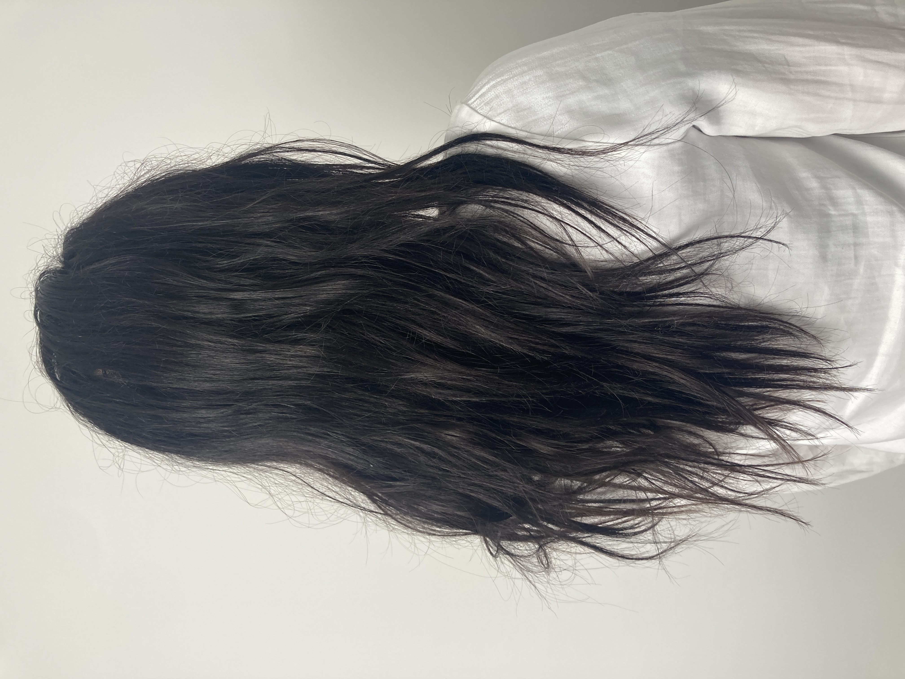
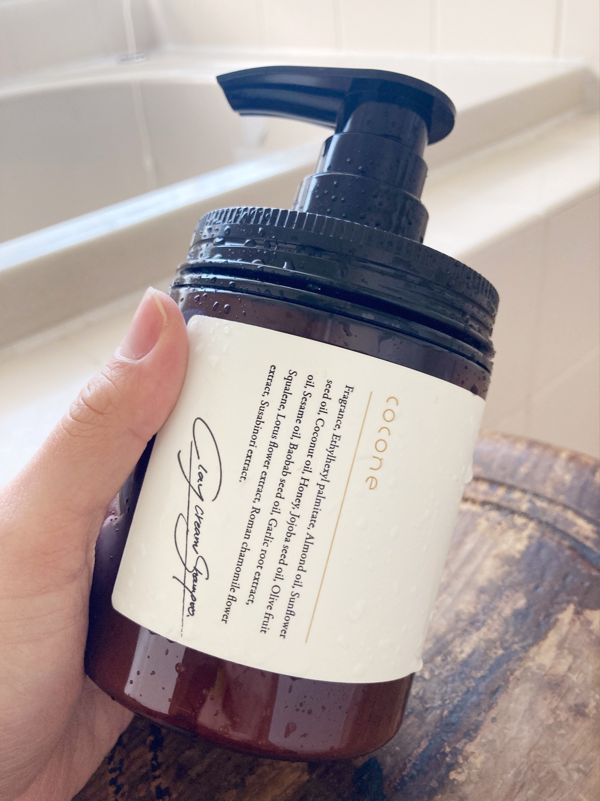
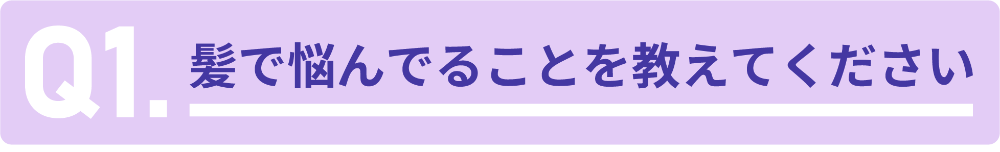
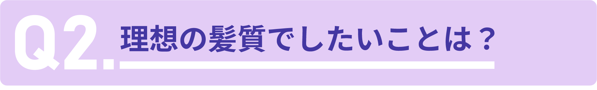

あれだけパサパサだった髪が
まさかのとぅるん？！
実はこれ
最近話題の
「縮毛矯正級」の
日本一売れたシャンプーの
※TPCマーケティングリサーチ株式会社「シャンプーに関する調査」調査機関2022年１月～１２月 アイテム別シェア
おかげだと
話題になってるんです...!
塗るだけで
パッサパサの髪が
ちゅるん！
アイロンしてないのに
髪がストンとまっすぐに！
実はこのシャンプー
楽天・アマゾン・アットコスメなどで
完売続出！
※アマゾン完売 2022/5/12~2022/5/23の期間
※楽天完売 2022/9/5~2022/9/14.2022/9/18~2022/0/21,2022/10/5~2022/10/6,2022/11/30~2022/12/1の期間
※アットコスメショップ 2021/9/15~2021/09/28の期間。いずれもココネシリーズモイストタイプの実績
10万人が予約待ちをした
※２０２１年４月から２０２２年１１月までの累計販売本数と予約を申し込みした人数。ココネシリーズモイストタイプの実績
自宅で「縮毛矯正級」シャンプー！
髪がパサつく原因の
「界面活性剤」を
一切不使用で
「高濃度コラーゲン」×「ナイアシンアミド」
を補修成分として
たっぷり配合！
だから
あれだけパサついてた髪が...!
これ１本の中に
これだけの役割ができちゃうから

たっか～い整髪料を
何個も揃える必要ナシ！
コスパが最強過ぎる...♡
もう美容サロンに行く必要ないですね⭐
リピート率も
驚異の97%..!
クチコミでも
大絶賛の声が
ゾクゾク！
パサパサだった髪質が..!
A・Yさん(37歳)
クセ毛をアイロンで無理に直そうとして、髪がボロボロ・パサパサに...でもコレ使ってからはアイロンいらずになって、朝の時間が増えました！すごくありがたいです！
梅雨のうねり悩みが消えました！
T・Yさん(44歳)
毎年梅雨になると、湿気のせいでうねりがヒドくなるんですが...このシャンプーを使い始めてからは、サロン帰りみたいなサラサラ髪に！もっと早く使っておけばよかったと後悔してます笑
なんでみんな
髪がとぅるとぅるに...?!
私のうねうね・ぼさぼさの髪と全然違う...

その原因を調べると
衝撃の理由が明らかに...!
衝撃!うねり・くせ毛の原因は
○○が原因だった...?!

髪がうねる・クセ毛が直らない
その原因...
実は
「髪の毛穴つまり」
のせいなんです！
実は
髪の毛穴の中には
通常のシャンプーでは
なかなか落としきれない
しつこい皮脂がこびりついてる...

皮脂が髪の毛穴に溜まってしまうと
髪が成長する過程で
皮脂にゆがめられ
あちこちに曲がりながら成長！

うねうねした髪質になってしまうんです!

じゃあ洗浄力の強いシャンプーで
ゴシゴシ洗えば
毛穴汚れが落ちるのでは？
と思った方
実は市販のシャンプーには
界面活性剤という
漂白剤と同じ超強力な洗浄成分が
入ってるんです

市販のシャンプーで
髪をゴシゴシ洗えば
漂白剤を肌に塗りつけるのと
同じようなもの
だから
あっという間に頭皮がボロボロに...

当然、刺激の強すぎる成分のせいで
髪までボロボロ・パサパサに...
無理に矯正しようと
アイロンをあてることで
さらに髪質が悪化する不のループに
だから
キラキラしたストレート髪を作りたいなら

そんなシャンプーがマストなんです！
それがこちら！
ココネクレイクリームシャンプー！

私のあれだけバサバサだった髪が
塗るだけで
サラサラ！
それもそのはずで
実はこのシャンプー
通常のシャンプーとは違った
特殊な工夫をしてるんです！
ココネの特徴その１
ほぼ泡立たないクリーム！！
強力な刺激成分、界面活性剤を
全く使用してないから
泡立たないどろどろのテクスチャー♡
しかも
一つ一つの粒子が
毛穴の１００分の１の大きさの
マイクロクレイだから
市販のシャンプーでは届かなかった汚れを
ゴッソリと吸着！
毛穴周りの皮脂を取り除いてくれるから
髪の成長がまっすぐに！
ココネの特徴その２
贅沢すぎる補修成分
ココネの２つ目の特徴は
その贅沢な補修成分にあるんです！
本来なら
美容液に使われるはずの成分
高濃度コラーゲン×ナイアシンアミドを
予算の限界ギリギリまで配合！
なんと美容成分が
全体の87％も含まれているので
美容液で髪を洗っているようなもの
なんです...!
だから
ヘアアイロンや市販のシャンプーで
傷んだ髪を
毛先までしっかりと補修
髪の保護膜キューティクルを
復活させるおかげで
髪の毛の最初から最後まで
しっかりとまとまるんです！
だから
あれだけパサパサだった髪が

こんなにサラサラに！
自宅にいながら
サロン級の仕上がり
を毎日楽しめるんです！
クチコミでも
大絶賛の声が続出！
生まれて初めてサラサラに...!
A・Yさん(41歳)
生まれつきのクセ毛体質で、毎朝鏡を見るたびに憂鬱になりながらセットしてたのですが...
ココネを使い始めてからは毎日美容室帰りみたいな仕上がりになって感動してます💐
髪に自信が持てたのは初めてです
T・Kさん(34歳)
湿気で髪がうねり易い体質なせいで、何となくファッションにも自信が持てなかった日々..
ココネのおかげでそんな内向きなマインドが変わりました！
そこまで言われたら
さすがに気になってきたので
実際に使ってレビューしてみました！
普通なら予約待ちだったのですが
たまたま出荷のタイミングと重なって
すぐGETできました！♡

さっそく手に取ってみると
コンディショナーじゃないの？？！
ってくらい
どろどろで濃厚なテクスチャ
さすがに
美容成分が９０％近く入ってる
だけあるなと...
実際に使ってみると
クリームが肌になじんでる感じがして
すっごく気持ちい！
そして乾かした後の仕上がりが
こちら
本当にコレ私の髪？！
ってくらい
サラサラ・ストンな髪に...！
しかも
１本で
シャンプー・コンディショナーなど
８つの役割を担えるから
これ１つ使えばOKなのが
コスパ最強！
本当にヘアアイロンなしでも
こんなにサラサラになるなんて...
今までサロンに行ってたのは
なんだったのってなります🤣
このページ限定！
ココネがどこよりもお得に試せる！
縮毛矯正級に
ぼさぼさの髪がサラサラストンと話題の
美容院では絶対教えてくれない
ココネクレイクリームシャンプーですが
実力派だけに
そのお値段は普通ならやや高め...
通常価格はなんと3780円！

このページ限定！
公式アンケートキャンペーンを実施
このページから
アンケートに回答いただいた方に
1300円OFF
クーポン適用ページへご招待！

「自宅で縮毛矯正級」と
話題の
ココネクレイクリームシャンプーが
2,480円で試せちゃうんです！
さらに！
母の日を記念して💐
500円OFFクーポンも
追加プレゼント中！

つまり
1,980円で
試せちゃうってこと...?!

しかも！
今だけ期間限定で...
通常価格2,980円の
ヘアオイルが
無料でGETできる！

さらに
2つのお試しパウチもついてくるから
比較すると
こんなにお得！

もちろん送料無料だし
永久返金保証付きだから

気軽に試してみて合わなくても安心！
解約も
電話一本で簡単！

もしクレカがなくても
コンビニで後払い
できるから大丈夫！

ただし
このキャンペーンは
さすがに赤字覚悟でやってます...
そのため
在庫がなくなり次第、即終了

過去に何回も完売し
今回もすでに品薄状態なので
このキャンペーンが終わる前に
最安値でGETしてください！


